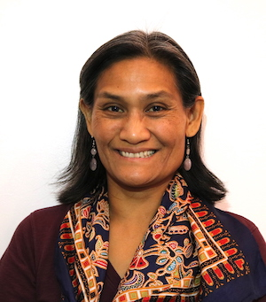
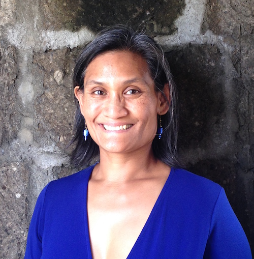
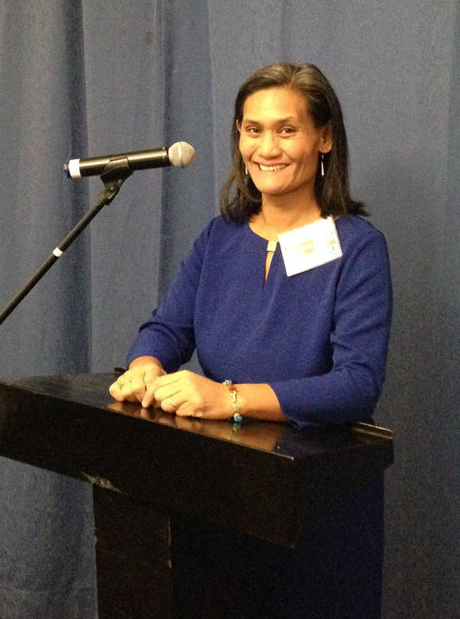
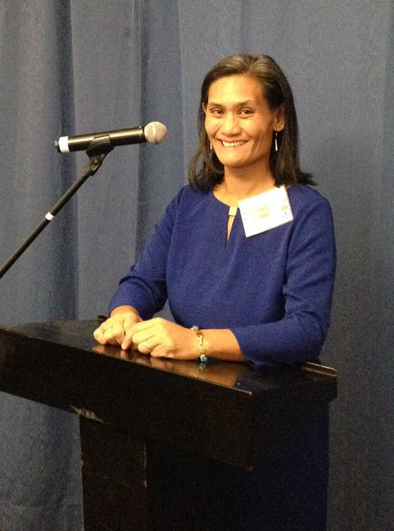
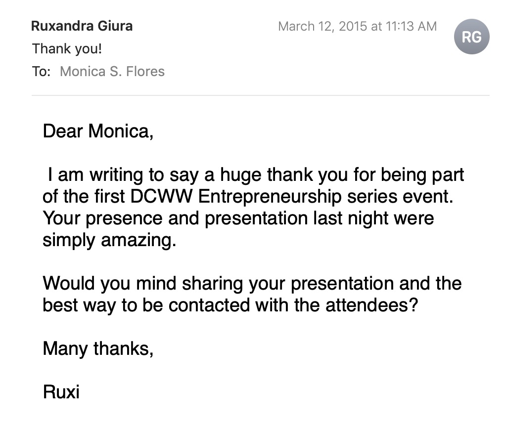
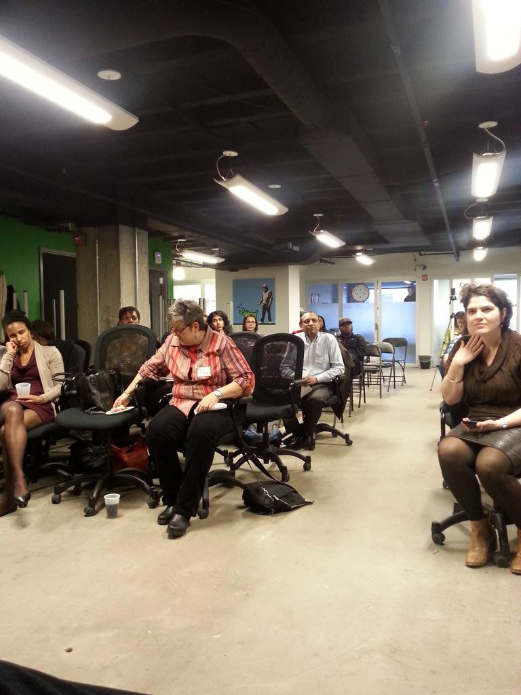
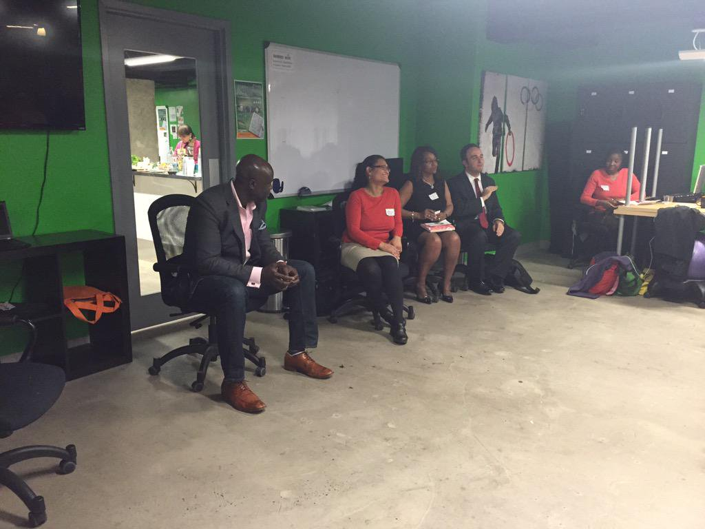

Monica S. Flores
 Monica S. Flores (@monicasflores) builds digital products to support a socially just, environmentally sustainable, equitable society. She currently serves as technical project manager on staff at Lullabot, a strategy, design, and development agency focused on Drupal.
Since 2004, she has built websites, launched digital platforms, and led redesign/refactoring for 240+ US-based & global membership groups, non-profits, public agencies, and startups, including Green America, GIST Network for the U.S. Department of State, and Ashoka: Innovators for the Public.
She is on the leadership team of DCFemTech, VP Programs at Campbell School, a member of The Wing, founded 10K Webdesign, cofounded the Female Founders Network, writes as a Council Member for The Nook Online, and serves as an elected board member and chair of the Diversity, Equity, and Inclusion committee for Green America.
She is the recipient of the 2018 NTENny award and speaks at conferences and panels on leadership, technology, and entrepreneurship.
updated: October 23, 2019
16 April 2019 Host, Tech-I Global Pitch Competition, 12 finalists pitching for $230k in cash and prizes
Global Entrepreneurship Congress, Bahrain
Photo credit: G. Lodise
16 April 2019 Tech-I Global Pitch Competition, female founders Queenny Lopez, Thuy Huong Ngo,
Jasmine Lim, Ariuntuya Altangarel, Monica S. Flores, Heidi Nguyen, Oghenetijiri Emuveyan
Global Entrepreneurship Congress, Bahrain
Photo credit: G. Lodise
Founder and advisor building digital products at the intersection of social justice, technology, education, & community
⬇️ Click for Short Biography
Monica S. Flores (@monicasflores) builds digital products to support a socially just, environmentally sustainable, equitable society. As a technical project manager she leads redevelopment/new rollouts for Fortune 500 brands, academic and government agencies, publishers, and e-commerce. Since 2004, she has developed websites for over two hundred US-based & global membership groups, non-profits, public agencies, and startups, including IBM, Green America, the U.S. Department of State / Global Entrepreneurship Network, and Ashoka Changemakers.
Flores is on the leadership teams of DC FemTech and the Campbell Parent-Teacher Association and was elected board member to Green America, where she chairs the Diversity, Equity, and Inclusion board committee. She teaches for the NTEN Nonprofit Technology Professional certificate, started the Female Founders Network (2015), co-founded 10K Webdesign (2004), and founded/sold A Successful Woman (2006-2012). She is the recipient of the 2018 NTENny award.
Monica is available to speak, moderate, or judge women’s groups, college groups, startup, entrepreneur, hackathon groups, female founders, womxn in tech, diversity in tech, and non-profit organizations, membership groups, and trade associations.
Past speaking engagements include: Global Entrepreneurship Week, Women in Technology Summit Southeast, Tech Rebalanced, Tech-I GIST Network Global Pitch Competition Bahrain, DC Startup Week, STEEAMnista Summit New York, DC Startup Weekend, Net2DC, DC Web Women, Working Mother DC, Women Tech Summit Philadelphia, DrupalCamp Hawaii.
⬇️ Click for Full Biography
Monica S. Flores brings over fifteen years of experience as a project manager, web developer, engineering manager, digital products director, technical founder, and advisor to national and global teams. Most recent engagements include her role leading large-scale redesign and refactoring as digital director for Green America, lead software engineer for the the GIST Network (a project of Global Entrepreneurship Network for the U.S. Department of State), and product team lead for the Ashoka Changemakers redesign. She taught herself to code in 1999 and moved to Drupal in 2008, implementing agile methods since 2014.
As a technical project manager at Lullabot, she supports web development teams on projects for Fortune 500 companies. She researches requirements and deliverables and executes on complex projectss, keeps timelines on track, communicates with clients, explains processes, and also helps identify functional specifications, determines and documents content types, user permissions, and reporting tools, and supports teams during buildout.
Author of the A Successful Woman’s Handbook series, Flores is passionate about leadership, innovation, education, and technology. She writes, speaks, and presents on social justice, environmental sustainability, and entrepreneurship, and currently serves on the faculty for the Nonprofit Technology Network's Professional Certification, teaching "Developing Good Data Practices."
She advises emerging projects that build community, foster connectedness, and advance technology to create a better world. She's familiar with startups, serving as founder, A Successful Woman (2006-2012), and founding board member and interim executive director, Asian Pacific Americans for Progress (2004-2006).
Current highlights:
- Leadership Team member, DC FemTech since November 2019
- PTA VP Programs, Campbell School since September 2019
- Council Member, The Nook Online, women's community, since February 2019
- Recipient, NTENny Award, December 2018
- The Wing Member, All-access, since November 2018
- Board member serving three-year term at Green America, also led website redesign as director of digital products, since June 2016
- Editor & founder, FemaleFounders.Network, since 2015
- Consultant, 10K Webdesign, delivering over two hundred web projects 2004-2014
She received a B.S. from the Department of Agricultural and Biological Engineering at Cornell University and is currently based in the Washington, DC area.
Presentations
Introduction to Drupal
Setting up a Drupal site on Pantheon, identifying content types, basic user roles and permissions, and views
link to presentation
Developing Good Data Practice
Thinking through your data structures, understanding how content types relate to one another, and making a plan for collecting and utilizing data at your organization.
link to presentation
Building an Action Plan for Diversity and Inclusion at your Organization
Slides and presentation for discussion of how to increase integrate Diversity, Equity, and Inclusion.
link to presentation

5 Learnings about the Website Redesign Process
Breaking down the architecture, timeline, and requirements to move a website onto Drupal 8 to increase capacity, allow for more integrated content, and better deploy meaningful information to clients, customers, and the community.
link to presentation
Five Tips to Increase Our Leadership Capacity
Women deserve greater opportunities for financing, mentorship, and advancement – women seek more responsibility (and better pay), and simultaneously navigate the path that leads to leadership opportunities. Learn five specific ways to increase demand for your expertise by “putting yourself out there”, giving yourself a chance to #failforward, facilitating professional development within your organization, operating around deliverables/results, and mentoring the next generation.
link to presentation
Learning to Fail Forward: Embracing Failure on your Journey to Success
Women with skills, enthusiasm, and determination face a wide-open future. We learn fortitude and flexibility by starting, growing, scaling, or in many cases, failing in our new venture. We’ll review six lessons in the entrepreneurial journey that model how to embrace change, learn from past mistakes, and move forward in your next opportunity.
link to presentation
Ten Tips to Travel the World
Use these tips to plan your journey of discovery. Voyage into the world with effective equipment, a positive attitude, and this roadmap to know who you are, where you are going, and how you will get to where you want to be.
link to presentation
2017 Marymount University Career Event
Gave remarks about supervising an intern, and the importance of communication, patience, and flexibility.
 

2016 DC Startup Weekend
Served as mentor for this hackathon focused on social good.


2016 STEEAMnista Summit 2016 - NYC
Panelist at event focused on increasing the participation, visibility, leadership, and celebrating the achievements of women across S.T.E.A.M. (Science, Technology, Engineering, Arts, Math) + Entrepreneurship + Makers.


2015 Women in Tech Summit "Inspiring Women to Take a Chance"
Speaker Panel “Women Helping Women” in Philadelphia, PA


2015 DC Web Women Speaker Series
Panelist for DC Web Women focus on Entrepreneurship
  Articles
I have written since 2008 on a variety of platforms and my current personal blog is at medium.com/@monicadear.


{kind=link}
September 10, 2010
Feel free to reach out and connect. The best way is to send a message via
Hashtags: #makeapositivedifference | #femalefoundersleadtheway | #stemdaisies | #womensocent